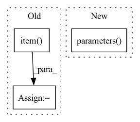

Pattern ID :32554

Before Change
self._scaler.update()
loss_agg += loss_abs.item()
loss_bbox_agg += losses["reg"].item()
loss_cls_agg += losses["cls"].item()
loss_seg_ce_agg += losses["seg_ce"].item()
loss_seg_dice_agg += losses["seg_dice"].item()
After Change
// Clip grads to counter exploding grads
max_norm = self._config["clip_max_norm"]
if max_norm > 0:
torch.nn.utils.clip_grad_norm_(self._model.parameters(), max_norm)
self._optimizer.step()
In pattern: SUPERPATTERN
Frequency: 3
Non-data size: 3
Instances
Fragment ID: 94766852
Project Name: bwittmann/transoar
Commit Name: d1d610ce7014a86c72c7d5625dbe82be40b2c340
Time: 2022-06-24
Author: bastian.wittmann@tum.de
File Name: transoar/trainer.py
M Class Name: Trainer
N Class Name: Trainer
M Method Name: _train_one_epoch(2)
N Method Name: _train_one_epoch(2)
M Parent Class:
N Parent Class:
M File Name: transoar/trainer.py
N File Name: transoar/trainer.py
M Start Line: 46
M End Line: 88
N Start Line: 42
N End Line: 83
'>
Before Change
loss = 1 - mse_loss / torch.var(x)
out = {}
out["pVar"] = loss.detach().item()
out["W"] = ws_layer.forward_weights.detach().cpu().numpy()
out["mu"] = ws_layer.mu.detach().numpy()
out["r"] = ws_layer.r.detach().numpy()
out["W0"] = W0
After Change
regularisation = ExecRatioTargetRegularization(ws_layer.get_sign_parameters(), exec_target_ratio=0.8)
optimizer = torch.optim.AdamW(model.parameters(), lr=learning_rate, maximize=True, weight_decay=0.01)
optimizer_reg = torch.optim.Adam(regularisation.parameters(), lr=5e-3)
criterion = nn.MSELoss()
checkpoint_manager = nt.CheckpointManager(
'>
Fragment ID: 94766847
Project Name: neurotorch/neurotorch
Commit Name: a19976d80f57c54d66a936925f12b6f25f452bb8
Time: 2022-09-28
Author: 50332514+JeremieGince@users.noreply.github.com
File Name: tutorials/time_series_forecasting_wilson_cowan/main_dale.py
M Class Name: AnonimousClass
N Class Name: AnonimousClass
M Method Name: train_with_params(20)
N Method Name: train_with_params(20)
M Parent Class:
N Parent Class:
M File Name: tutorials/time_series_forecasting_wilson_cowan/main_dale.py
N File Name: tutorials/time_series_forecasting_wilson_cowan/main_dale.py
M Start Line: 45
M End Line: 152
N Start Line: 51
N End Line: 168
'>
Before Change
loss.backward()
optimizer.step()
loss_sum += loss.detach().item()
print("Client[{}] Traning. Epoch {}/{}, Loss {:.4f}, Time {:.2f}s".
format(id, epoch + 1, epochs, loss_sum,
time() - time_begin))
After Change
SerializationTool.deserialize_model(self._model, model_parameters)
epochs = 5
criterion = torch.nn.CrossEntropyLoss()
optimizer = torch.optim.SGD(self._model.parameters(), lr=0.1)
self._model.train()
for _ in range(epochs):
'>
Fragment ID: 94766843
Project Name: smilelab-fl/fedlab
Commit Name: 16befdf9173a4b4f4430f456b5353765c6d4d3e3
Time: 2021-08-08
Author: 928255708@qq.com
File Name: fedlab/core/client/serial_trainer.py
M Class Name: SerialTrainer
N Class Name: SerialTrainer
M Method Name: _train_alone(4)
N Method Name: _train_alone(8)
M Parent Class: ClientTrainer
N Parent Class: ClientTrainer
M File Name: fedlab/core/client/serial_trainer.py
N File Name: fedlab/core/client/serial_trainer.py
M Start Line: 102
M End Line: 137
N Start Line: 98
N End Line: 119